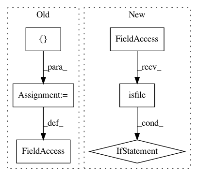

73162ce7ca689cd10f67b823f54d3fbf81e8ee91,doc/source/conf.py,,,#,408
Before Change
// We only document __init__.py files... except for these special cases.
// Use the unix full pathname from the root of the checked out repo
explicit_wanted_files = [
"spynnaker/gsyn_tools.py",
"spynnaker/spike_checker.py",
"spynnaker/plot_utils.py",
"spynnaker/pyNN/abstract_spinnaker_common.py",
"spynnaker/pyNN/exceptions.py",
"spynnaker/pyNN/spynnaker_simulator_interface.py",
"spynnaker/pyNN/spynnaker_external_device_plugin_manager.py",
"spynnaker/pyNN/models/abstract_pynn_model.py",
"spynnaker/pyNN/models/projection.py",
"spynnaker/pyNN/models/defaults.py",
"spynnaker/pyNN/models/recorder.py",
"spynnaker/pyNN/models/neuron/key_space_tracker.py",
"spynnaker/pyNN/models/neuron/synaptic_matrices.py",
"spynnaker/pyNN/models/neuron/master_pop_table.py",
"spynnaker/pyNN/models/neuron/synaptic_matrix.py",
"spynnaker/pyNN/models/neuron/synapse_io.py",
"spynnaker/pyNN/models/neuron/synaptic_matrix_app.py",
"spynnaker/pyNN/models/neuron/plasticity/stdp/common.py",
"spynnaker/pyNN/models/spike_source/spike_source_array_vertex.py",
"spynnaker/pyNN/models/spike_source/spike_source_poisson_vertex.py",
"spynnaker/pyNN/models/spike_source/spike_source_poisson_machine_vertex.py",
"spynnaker/pyNN/models/common/recording_utils.py",
"spynnaker/pyNN/utilities/bit_field_utilities.py",
"spynnaker/pyNN/utilities/spynnaker_failed_state.py",
"spynnaker/pyNN/utilities/constants.py",
"spynnaker/pyNN/utilities/data_cache.py",
"spynnaker/pyNN/utilities/extracted_data.py",
"spynnaker/pyNN/utilities/fake_HBP_Portal_machine_provider.py",
"spynnaker/pyNN/utilities/running_stats.py",
"spynnaker/pyNN/utilities/utility_calls.py",
"spynnaker/pyNN/utilities/struct.py",
"spynnaker/pyNN/utilities/variable_cache.py",
"spynnaker8/spynnaker8_simulator_interface.py",
"spynnaker8/spynnaker_plotting.py",
"spynnaker8/utilities/neo_convertor.py",
"spynnaker8/utilities/neo_compare.py"]
options = ["-o", output_dir, ".",
// Exclude test and setup code
"p8_integration_tests/*", "unittests/*", "setup.py"]
options.extend(filtered_files("spynnaker", explicit_wanted_files))
After Change
// Do the rst generation; remove files which aren"t in git first!
for fl in os.listdir("."):
if (os.path.isfile(fl) and fl.endswith(".rst") and
fl not in ("index.rst", "modules.rst")):
os.remove(fl)
os.chdir("../..") // WARNING! RELATIVE FILENAMES CHANGE MEANING HERE!
apidoc.main([
"-o", _output_dir, ".",
// Exclude test and setup code
In pattern: SUPERPATTERN
Frequency: 4
Non-data size: 6
Instances
Project Name: SpiNNakerManchester/sPyNNaker
Commit Name: 73162ce7ca689cd10f67b823f54d3fbf81e8ee91
Time: 2021-02-25
Author: donal.k.fellows@manchester.ac.uk
File Name: doc/source/conf.py
Class Name:
Method Name:
Project Name: recipy/recipy
Commit Name: 30a291416446ee95a349a2e292e0ee88645965a2
Time: 2016-09-21
Author: michaelj@epcc.ed.ac.uk
File Name: integration_test/test_recipyrc.py
Class Name: TestRecipyrc
Method Name: setup_method
Project Name: idaholab/raven
Commit Name: 015743bbf56505b64f8ece68a1316cb817cde0bb
Time: 2017-05-30
Author: joshua-cogliati-inl@users.noreply.github.com
File Name: setup3.py
Class Name:
Method Name:
Project Name: Pinafore/qb
Commit Name: eb979ca370c60cdb6318141e097be8dc1c04b8e1
Time: 2016-02-29
Author: jordanbg@gmail.com
File Name: util/human_buzzer.py
Class Name:
Method Name: